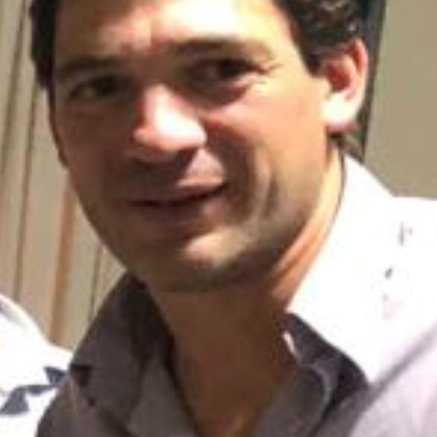

Ignacio Castro
Estudiante de Comunicación Social UNRC, Periodista en Cabledigital y Diario Puntal

Tengo 46 años, soy nativo de Huinca Renancó, Córdoba, Argentina, mi profesión es Periodista. Pienso que el compromiso con preservar el medio ambiente, del cual somos parte, debe ser una cuestión Ética. Es aquí y ahora.